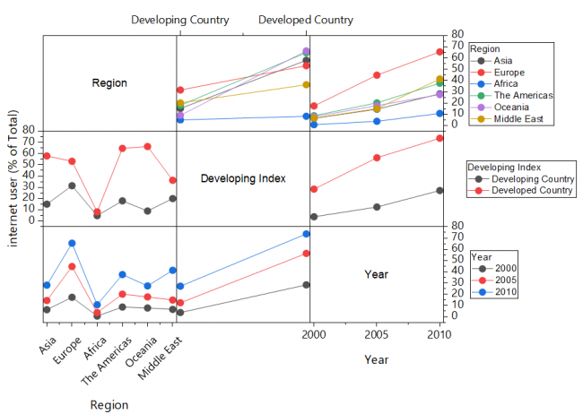
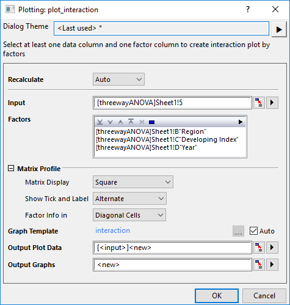
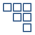
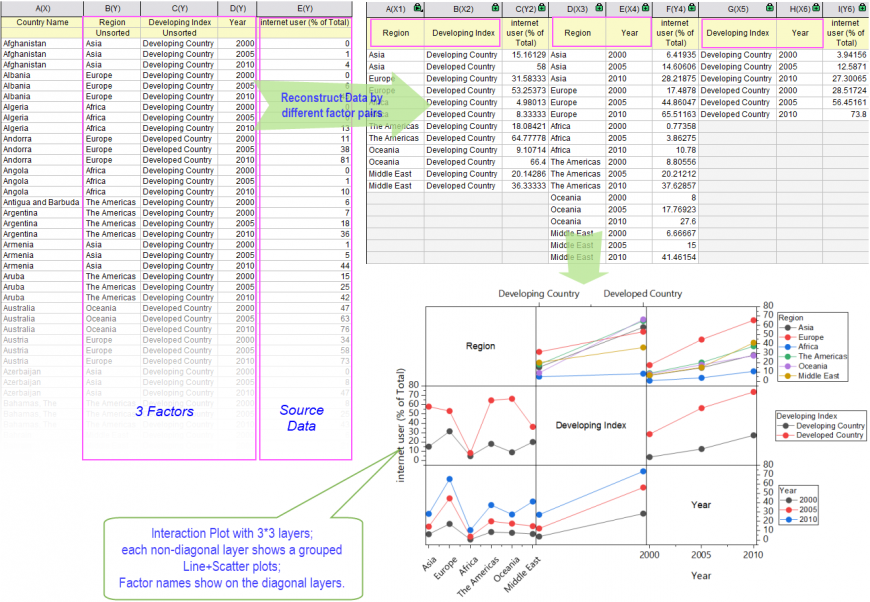

Wechselwirkungsdiagramm
Interaction-Plot

Datenanforderungen
Wählen Sie mindestens eine Datenspalte und eine Faktorspalte, um ein Wechselwirkungsdiagramm nach Faktoren zu erstellen.
Diagramm erstellen
Wählen Sie die gewünschten Daten aus.
Wählen Sie im Menü Zeichnen > Statistisch: Wechselwirkungsdiagramm, um den Dialog plot_interaction zu öffnen.

Bedienelemente des Dialogs
| Eingabe |
Legen Sie die Eingabedaten fest. |
| Faktoren |
Wählen Sie N Faktoren, die miteinander in Wechselwirkung stehen. |
| Matrixprofil |
Diese Gruppe entspricht der Gruppe für die Matrix von Streudiagrammen.
- Matrixanzeige: Es gibt drei Anordnungen für alle N*N Layer:
|
Quadrat
|
Obere Dreiecksmatrix

|
Untere Dreiecksmatrix

|
- Hilfsstrich und Beschriftung zeigen: Wählen Sie, wie die Hilfsstriche und Beschriftungen für alle Layer gezeigt werden sollen. Es gibt drei Anordnungen, wie unten zu sehen:
|
Kein

|
Alle

|
Abwechselnd
|
|
|
Unten&Links

|
Unten&Rechts

|
Oben&Links

|
Oben&Rechts

|
- Faktorinfo in: Legen Sie fest, wo die Faktornamen gezeigt werden, in den diagonale Zellen oder in jedem Feld.
|
| Diagrammmvorlage |
Legen Sie die Vorlage fest, um das Wechselwirkungsdiagramm zu zeichnen.
Per Standard wird die Vorlage interaction verwendet. Sie können das Kontrollkästchen Auto deaktivieren, um eine Anwendervorlage auszuwählen und das Format, das Sie im Voraus gespeichert haben, anzuwenden.
|
| Ausgabe |
Geben Sie die Zeichnungsdaten in ein bestimmtes Blatt aus. |
| Diagramme ausgeben |
Geben Sie die Ergebnisdiagramme in ein bestimmtes Blatt aus. |
Vorlage
interaction.otpu (installiert im Origin-Programmordner)
Hinweis
Das Wechselwirkungsdiagramm sieht aus wie eine Matrix von Streudiagrammen und zeigt eine Matrix von Wechselwirkungsdiagrammen. In einem Wechselwirkungsdiagramm ist die Anzahl der Zeilen und der Spalten jeweils gleich der Anzahl der Gruppierungsvariablen (Faktoren). Jedes Feld (außer den diagonalen Feldern) kennzeichnet die Wechselwirkung des Zeileneffekts mit dem Spalteneffekt.
Wenn Sie N Faktoren auswählen, erhalten Sie N*N Layer (Zellen). Standardmäßig zeigen die diagonalen Zellen Beschriftungen für jeden Faktor. Ermitteln Sie für die (N, M)-Zelle den Mittelwert der Datenspalte mit dem N-ten und M-ten Faktor. Zeichnen Sie dann den M-ten Faktor in X-Richtung gegen Y als Punkt-Liniendiagramm, wobei der N-te Faktor auf die Teildatensatzspalte festgelegt ist. Hinweis: Die Zellen (N, M) und (M, N) teilen die gleichen Daten im Datenblatt des Ergebnisdiagramms.
